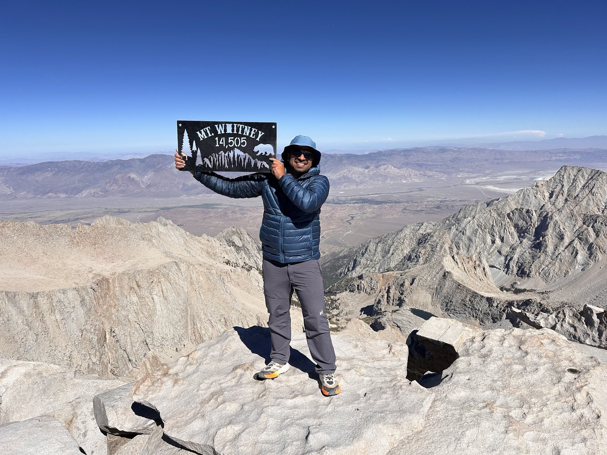

About
Current
I’m a PhD student in Electrical Engineering and Computer Science at the University of California, Merced, advised by Dr. Mukesh Singhal. My research interests include Multi-Agent Reinforcement Learning (MARL), Multi-Agent Systems, Robot Learning, and Multimodal AI.
Before starting my PhD, I completed my M.S. in EECS at UC Merced. During my master's, I worked as a Graduate Student Researcher in the Robotics Lab, advised by Dr. Stefano Carpin. I contributed to OrchSmart, an intelligent irrigation-control system designed to reduce freshwater consumption in almond orchards.
I have also worked as a Teaching Fellow and Instructor of Record for EE-060, Boolean Algebra and Digital Circuits, where I designed and delivered the complete summer course for 64 undergraduate students. I have served as a Teaching Assistant for several EE and CSE courses at UC Merced.
Before Graduate School
Before graduate school, I spent about nine years in the software industry, primarily building high-performance, scalable, and reliable software systems for healthcare and life-sciences applications. I worked at Vocera Communications, later acquired by Stryker, where I progressed from Software Engineer III to Senior Staff Software Engineer. Before Vocera, I worked at Thermo Fisher Scientific and Infosys.
Background
I grew up in Jaipur, India, where I completed my school and undergraduate education. I have been interested in mathematics, physics, electronics, and computers from an early age. My interest in electronics began with simple things such as flashlights and portable radios. Later, during engineering school, I started programming and exploring web applications, image processing, electronic circuit design, and scientific computing using C++, Python, MATLAB, and OpenCV.
Outdoors
Outside research and engineering, I enjoy hiking and mountaineering. In the Sierra Nevada, I have climbed Mount Whitney, Mount Dana, Kuna and Koip Peaks, and Mount Conness. I have also climbed Half Dome multiple times and completed several long hikes in Yosemite. In India, I completed the Basic Mountaineering Course at the Nehru Institute of Mountaineering in Uttarkashi, earning an A grade.
I also enjoy cooking, reading, and listening to old classics on AM radio — particularly 940 KYNO here in California's Central Valley. See my outdoors log and photo album →
Contact
You can reach me at hello@amitthakur.org.

Timeline
Ph.D. in EECS · University of California, Merced
Research in multi-agent reinforcement learning, multi-agent systems, robot learning, and multimodal AI.
Teaching Fellow (Lecturer) · UC Merced
Instructor for EE-060; designed and delivered the complete course for 64 undergraduate students.
Teaching Assistant · UC Merced
Led laboratory sessions and tutorials for EE-060, CSE-019, and CSE-022 across multiple semesters.
Graduate Student Researcher · Robotics Lab, UC Merced
Developed components of OrchSmart, an intelligent irrigation-control system for almond orchards.
M.S. in EECS · University of California, Merced
Graduate study and research in robotics, artificial intelligence, and autonomous systems.
Vocera Communications · Acquired by Stryker
- Senior Staff Software Engineer · Mar 2023 — Jul 2023
- Staff Software Engineer · Aug 2022 — Feb 2023
- Software Engineer III · Apr 2020 — Jul 2022
Worked on distributed healthcare software, performance, reliability, platform architecture, and engineering leadership.
Software Engineer II · Thermo Fisher Scientific
Developed software and data-processing systems for life-science instrumentation and cloud applications.
Senior Systems Engineer · Infosys
Developed data-analytics and product-inventory web applications and improved application search performance.
B.Tech. in Electronics & Communication Engineering · Jaipur National University
Undergraduate study in electronics, communication systems, computing, and engineering.
Elsewhere
Code and technical experiments are on GitHub. Professional information and updates are on LinkedIn.